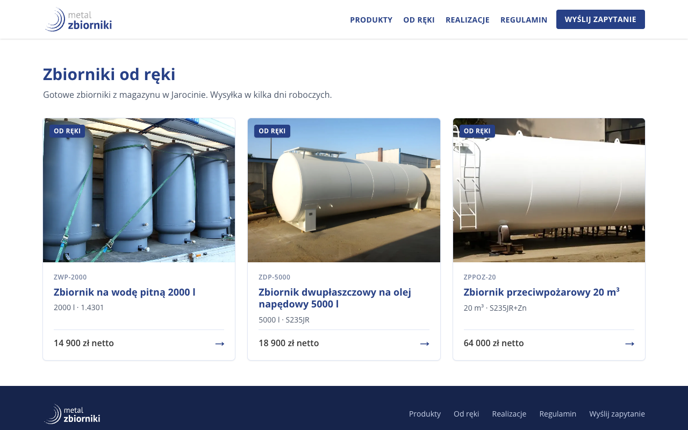
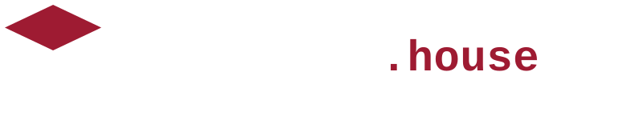
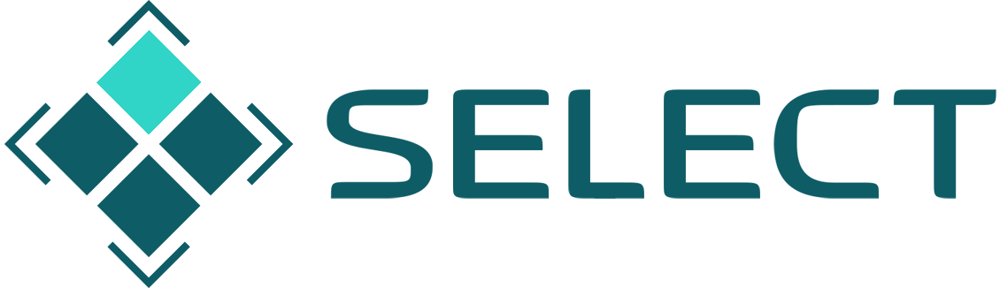

Open Mercato Software FactoryHackOn #220.09.2026

Linear i Copilot widzą repo. My widzimy firmę.


| Agenci w repo | Fabryka na Open Mercato | |
|---|---|---|
| Start | ticket albo prompt programisty | nowy produkt, zrealizowane zamówienie, poprawka rekordu |
| Dane | tylko to, co jest w kodzie | katalog, klienci, zamówienia i to, co agent pobierze z sieci |
| Kto zatwierdza | programista czyta diff | właściciel ogląda podgląd; prawnik tylko przy tekście prawnym |
| Wynik | PR | PR, zmiana rekordu albo wiadomość, zawsze podpięte do zadania |